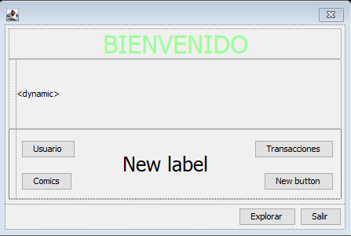

Información Usuario

Esta ventana corresponde a la ventana principal una vez realizada la conexión con el servidor.
La parte superior es enteramente decorativa, sin haber realmente nada destacable.
En la parte inferior, podemos encontrar unos botones que generarán informes en base a los datos de la base de datos
- Usuario: Mostrará un informe con todos los usuarios de la base de datos
- Comics: Mostrará un informe con todos los comics de la base de datos
- Transacciones: Mostrará un informe con todos los cambios (Inserció,borrado y modificado) realizados por el usuario con la sesión iniciada
- WIP: Mostrará un informe con todos los cambios de un tipo realizados por el usuario
- Explorar: Abrirá la ventana TablaComics
- Salir: Saldrá de la aplicación